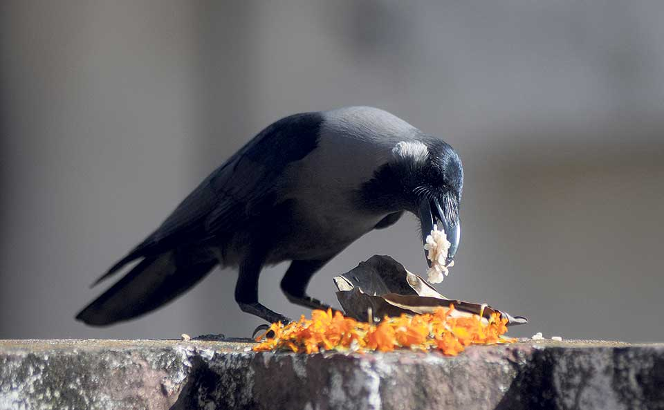
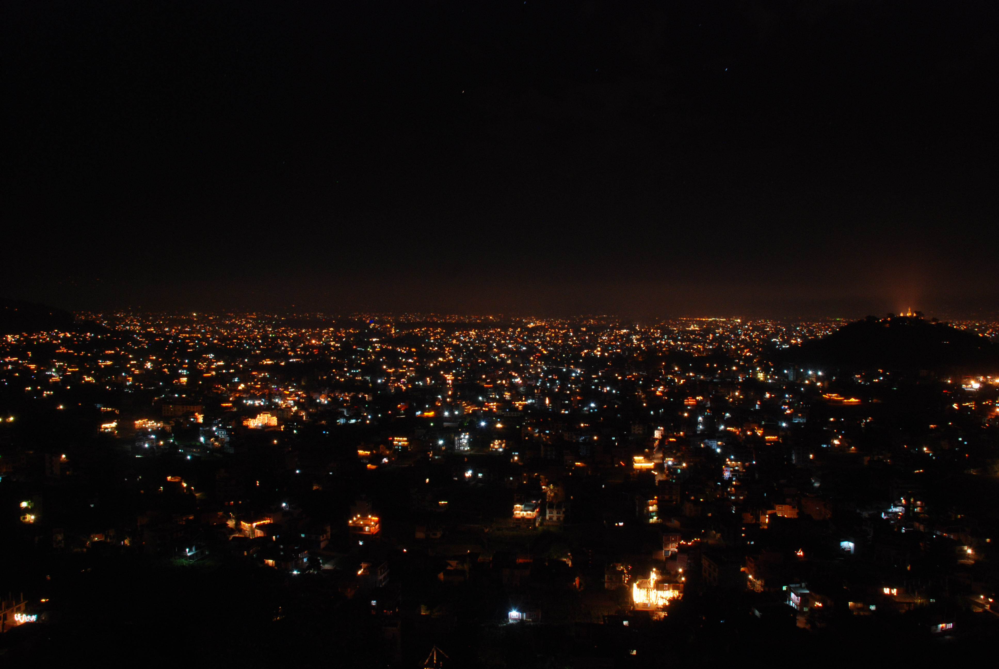
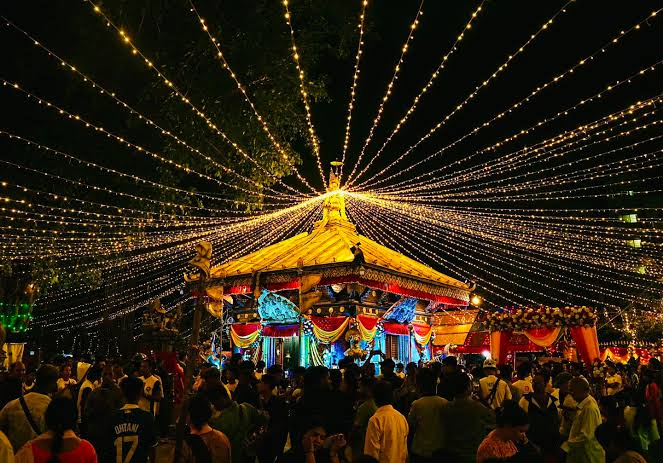
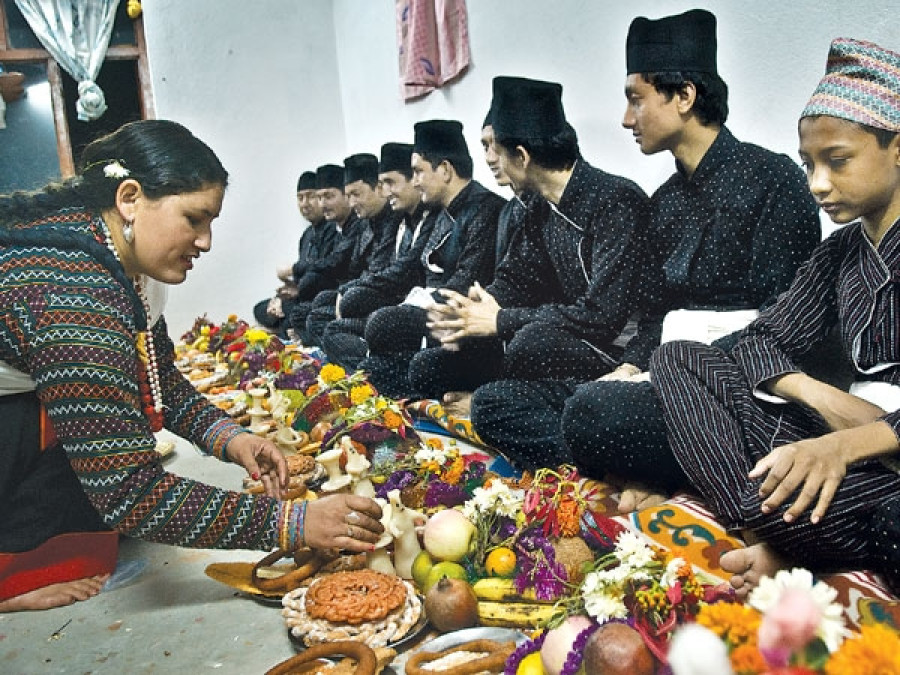
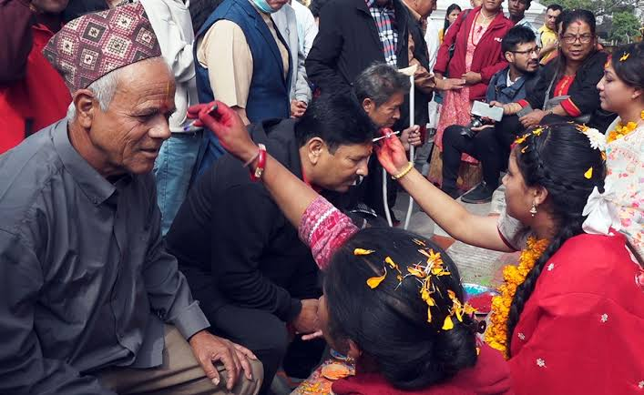
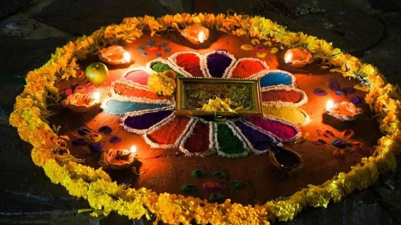
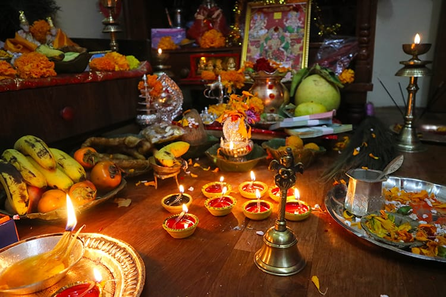
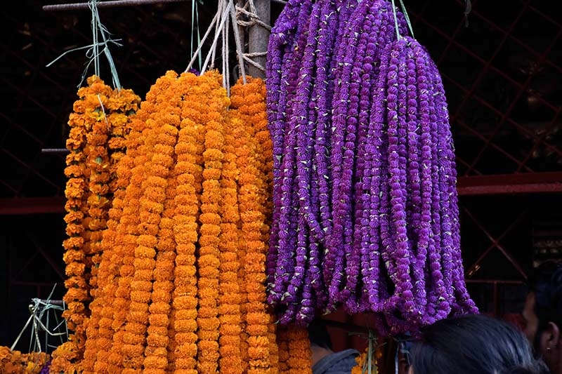
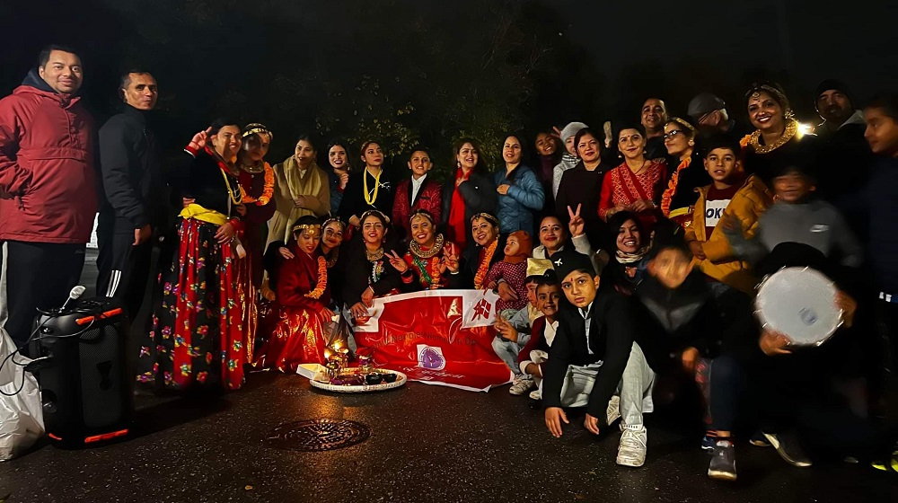

A celebration of light & togetherness
Happy Tihar
May the lights of Tihar fill your life with happiness, prosperity and success.
Explore Traditions
The spirit of Tihar
The Festival of Lights
Tihar is a five-day Nepali festival that brings homes and hearts to life with glowing diyos, vibrant flowers and joyful traditions. Each day honors a different connection — with nature, animals, family and the relationships that make life brighter.
Learn More
A journey through tradition
The Five Days of Tihar



DAY 04
Govardhan / Mha Puja
A celebration of nature and the Newari tradition of self-honor.
Explore More
DAY 05
Bhai Tika
Sisters and brothers celebrate their lasting bond with tika and blessings.
Explore More
The beauty of celebration
Moments of Celebration



